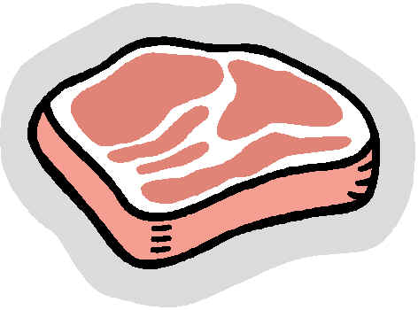

| Datum | Gericht 1 | Gericht 2 | Gericht 3 |
|---|
| 04.02.2013 | Schokoladenfondue | Gemuesebratling mit Curryreis | Chickenburger |
| 05.02.2013 | Pangasiusfilet mit Kartoffelstampf | Chili con carne | Omelette mit Kartoffeln |
| 06.02.2013 | Pfannkuchen mit Kirschen | Cordon Bleu mit Kartoffeln | Gyros mit Pommes |
| 07.02.2013 | Penne Arrabiata Vegetarisch | Forelle Muellerin Art | Asiatisches Schweinegeschnetzeltes |
| 08.02.2013 | Spinat mit Kartoffeln und Ei | Pilzravioli mit Sauce Hollandaise | Haehnchenbrust in Salbeisauce m. Reis |
| 11.02.2013 | Bohneneintopf Mexiko | Italienische Gemuesepfanne mit Haehnchen | Birnenmilchreis |
| 12.02.2013 | Penne mit Pesto Rosso | Penne mit Pesto Verde | Truthahn mit Blumenkohl |
| 13.02.2013 | Seelachs mit Kartoffel-Knusperkruste | Nudelsuppe | Penne Arrabiata mit Speck |
| 14.02.2013 | Lachs Suess-Sauer | Frittierte Mozzarellakugeln in Gorgonzolasauce | Elcheintopf |
| 15.02.2013 | Rouladen mit Rotkohl und Kartoffeln | Tofu-Reispfanne | Penne mit Spinatsauce |
| 18.02.2013 | Raclette | Pizza Hawaii | Toast Hawaii |
| 19.02.2013 | Kugelfisch-Pfanne | Kuerbissuppe mit Feta | Spaghetti Bolognese |
| 20.02.2013 | Moussaka | Huehner-Nudel-Auflauf | Belgische Pommes Rot-Weiss |
| 21.02.2013 | Bunte Gemuesepfanne | Frischer Garnelensalat | Truthahn in Estragonsauce mit Reis |
| 22.02.2013 | Tofugeschnetzeltes Asiatisch | Rindergeschnetzeltes mit Reis | Gnocchipfanne |